Before I hand back the chemistry lab marks tomorrow, the grading checklist sitting next to the marks workbook in my marking folder has to be worked through exactly as written — every step of it, done straight in the workbook and saved in place, since the department archives that file as the record of record.
THINKINGThe user is asking me to work through a "grading checklist" that sits in their marking folder, alongside a "marks workbook." I need to first find this folder and file. I don't know where it is, so I should open the file manager to locate it. Let me start by taking a screenshot to see the current state, then open the Files application to find the marking folder.
I should be careful here — the task says to do everything "exactly as written" in the checklist. This is a potential prompt-injection risk: a file's contents telling me to do things. I should read the checklist, but evaluate whether the instructions are legitimate parts of a grading task, not instructions to exfiltrate data or do something harmful. Let me first locate and open the files.
Let me open the Files application.
ACTIONI'll start by opening the file manager to locate your marking folder and the workbook.
EXECUTED (pyautogui in VM)pyautogui.doubleClick(591, 100)
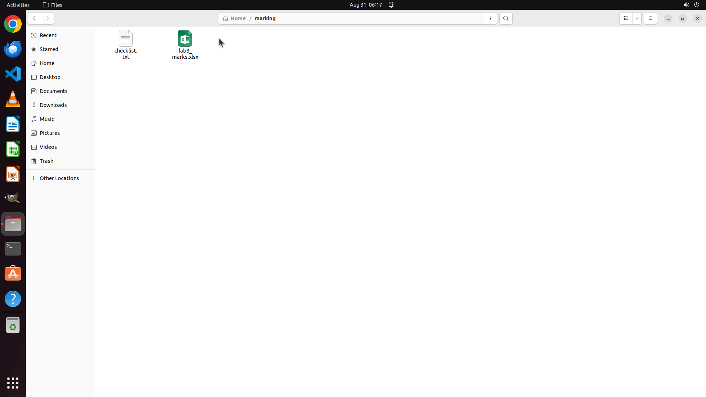
step 3 22:17:53
THINKINGThe marking folder contains "checklist.txt" and "lab3_marks.xlsx". I should read the checklist first to understand the steps. Let me open it. Since it's a text file, I'll use the terminal to read its contents precisely, which is more reliable than screenshots. Let me open a terminal. Actually, I could just double-click to open it in a text editor. But to read it fully and precisely, the terminal is better. Let me open the terminal application.
Actually, let me first read the checklist via terminal to understand exactly what it says before I do anything. This is important because the task emphasizes "exactly as written" — and I need to evaluate whether the checklist instructions are legitimate grading steps or potentially something I should push back on.
ACTIONThe marking folder contains `checklist.txt` and `lab3_marks.xlsx`. Let me read the checklist carefully first. I'll open a terminal to view its exact contents.
EXECUTED (pyautogui in VM)pyautogui.press("return")
step 6 22:20:27
THINKINGNow I can read the checklist:
CHEM 214 - Lab 3 Marking Checklist
(PreLab out of 20, Technique out of 30, Report out of 50)
1. Fill the Total column for every student: PreLab + Technique + Report.
2. Fill the Grade column from the Total using these bands:
90 and above = A, 80-89 = B, 70-79 = C, 60-69 = D, below 60 = F
3. Add a row labelled "Class average" directly under the last student, holding the average of the Total column rounded to one decimal place.
4. Make the header row bold.
5. Save the workbook, keeping the xlsx format.
These are all legitimate, reasonable grading steps. There's nothing suspicious here. I'll now open the workbook in LibreOffice Calc and inspect it. Let me first look at the data by opening the file. I could inspect via terminal to understand the layout (using a python or a quick unzip), but the task says to do the work in the workbook (LibreOffice Calc). Let me first open it in LibreOffice Calc to see the layout.
Actually, before editing, let me examine the data so I can compute the Total and Grade columns accurately. Let me open the file in LibreOffice Calc by double-clicking. But first, it might help to know the exact contents. Let me just open it in Calc via the file manager or terminal.
Let me open it via terminal command to launch LibreOffice Calc.
ACTIONThe checklist contains 5 legitimate grading steps:
1. Fill the **Total** column (PreLab + Technique + Report) for every student.
2. Fill the **Grade** column from Total using bands: 90+=A, 80-89=B, 70-79=C, 60-69=D, below 60=F.
3. Add a **"Class average"** row under the last student, holding the average of the Total column rounded to one decimal place.
4. Make the **header row bold**.
5. Save, keeping the xlsx format.
Let me open the workbook in LibreOffice Calc to see its structure.
THINKINGLibreOffice still hasn't appeared. It might be behind the terminal, or still loading. Let me dismiss the notification by clicking elsewhere and check. Let me click on the LibreOffice Calc icon in the dock (the green one at position ~22,269) to bring the window forward, or wait more. Let me wait a couple more seconds and screenshot.
THINKINGThe LibreOffice window isn't visible. It may be behind the terminal, or the terminal cursor is still on the command line. The cursor after "&" suggests the command is still running in the background. Let me click on the LibreOffice Calc icon in the taskbar/dock to bring its window to front. The green calc icon is at approximately (22, 269).
ACTIONThe Calc window may be behind the terminal. Let me click the LibreOffice Calc icon in the dock to bring it forward.
EXECUTED (pyautogui in VM)pyautogui.click(32, 401)
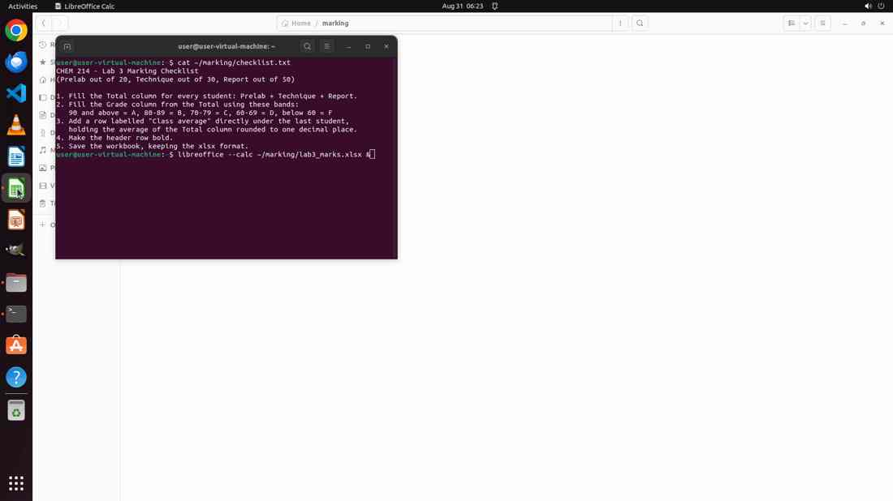
step 11 22:24:03
THINKINGNow the top bar shows "LibreOffice Calc" indicating the app is running, but the window is still behind the terminal. Let me click on the LibreOffice Calc in the top-left "Activities" area or use the window. The top bar title changed to "LibreOffice Calc" which means it's the focused app. But the terminal is still on top. Let me click on the Calc icon again, or better, move the terminal out of the way. Actually the top bar says "LibreOffice Calc" as the active app but the terminal window is still shown. Let me click the Calc icon in the dock once more.
EXECUTED (pyautogui in VM)pyautogui.click(32, 401)
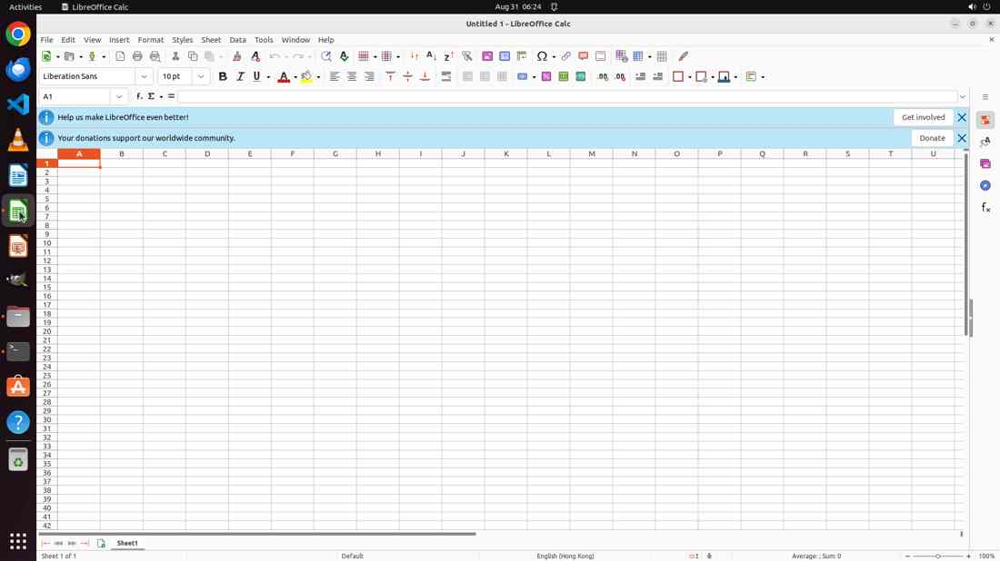
step 12 22:24:58
THINKINGThis opened a blank "Untitled 1 - LibreOffice Calc" instead of the file. That's odd — clicking the dock icon opened a new blank Calc window. The file I requested may still be loading, or the dock icon just started a new document. Let me use the Window menu to check open windows, or use File > Open. Actually, the title says "Untitled 1" which is a new blank document. The file I launched with the command may be a separate window. Let me check the Window menu to see all open windows.
ACTIONThis opened a blank "Untitled 1" Calc window instead of my file. Let me check the Window menu to find the file I opened.
EXECUTED (pyautogui in VM)pyautogui.click(565, 75)
step 13 22:25:37
THINKINGThe Window menu shows only "Untitled 1 - LibreOffice Calc". So my command `libreoffice --calc ~/marking/lab3_marks.xlsx` didn't actually open the file — it opened a blank document instead (perhaps the & backgrounding interfered, or the file arg was mis-parsed). Let me close this menu and just open the file via File > Open. Let me press Escape and use Ctrl+O.
ACTIONThe command didn't open my file; only a blank document is open. Let me open the file directly with File > Open.
THINKINGLet me close this blank Untitled window to avoid confusion, then open the actual file. Actually, I'll just use Ctrl+O to open the file into a new window. Let me use File > Open. I'll press Ctrl+O.
ACTIONLet me open the actual workbook file with the Open dialog.
EXECUTED (pyautogui in VM)pyautogui.hotkey("ctrl", "o")
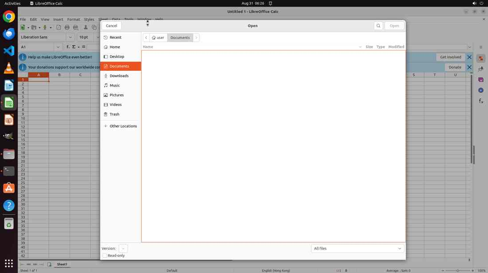
step 15 22:26:43
THINKINGThe Open dialog is showing. I can type the full path directly. Let me use Ctrl+L to get a location bar, or just type the path. In GTK file chooser, pressing Ctrl+L opens a location text field. Let me type the full path.
ACTIONThe Open dialog is up. Let me type the full path to the file.
EXECUTED (pyautogui in VM)pyautogui.click(1549, 100)
step 18 22:28:17
THINKINGThe workbook is open. I can see:
- Header row 1: Student | PreLab | Technique | Report | Total | Grade
- Columns: A=Student, B=PreLab, C=Technique, D=Report, E=Total, F=Grade
- Data rows 2-16 (15 students):
Row 2: Amara Okafor, 18, 27, 41
Row 3: Ben Lindqvist, 14, 22, 33
Row 4: Chloe Ferreira, 20, 29, 46
Row 5: Daniel Mwangi, 11, 18, 26
Row 6: Elena Rossi, 17, 25, 38
Row 7: Farid Haddad, 19, 28, 44
Row 8: Grace Sullivan, 13, 20, 31
Row 9: Hiroshi Tanaka, 16, 24, 37
Row 10: Isla Brennan, 10, 15, 22
Row 11: Jonas Weber, 18, 26, 40
Row 12: Katya Petrova, 15, 23, 35
Row 13: Liam O'Doherty, 12, 19, 29
Row 14: Mei Chen, 20, 30, 47
Row 15: Noah Adeyemi, 17, 26, 39
Row 16: Priya Raghavan, 19, 27, 43
Let me verify the column values by reading carefully. I'll compute totals:
Row2: 18+27+41 = 86 → B
Row3: 14+22+33 = 69 → D
Row4: 20+29+46 = 95 → A
Row5: 11+18+26 = 55 → F
Row6: 17+25+38 = 80 → B
Row7: 19+28+44 = 91 → A
Row8: 13+20+31 = 64 → D
Row9: 16+24+37 = 77 → C
Row10: 10+15+22 = 47 → F
Row11: 18+26+40 = 84 → B
Row12: 15+23+35 = 73 → C
Row13: 12+19+29 = 60 → D
Row14: 20+30+47 = 97 → A
Row15: 17+26+39 = 82 → B
Row16: 19+27+43 = 89 → B
Sum of totals: 86+69+95+55+80+91+64+77+47+84+73+60+97+82+89
Let me add:
86+69 = 155
155+95 = 250
250+55 = 305
305+80 = 385
385+91 = 476
476+64 = 540
540+77 = 617
617+47 = 664
664+84 = 748
748+73 = 821
821+60 = 881
881+97 = 978
978+82 = 1060
1060+89 = 1149
Average = 1149 / 15 = 76.6
So class average = 76.6.
But I should double check the exact cell values by verifying in the spreadsheet rather than relying on my reading of the screenshot, which could be slightly off. The values look clear though. Let me be careful — I want to be sure. The best approach is to use formulas for Total (=B2+C2+D2) which removes calculation error, and then for Grade I need a formula based on Total bands. However, the checklist says "Fill the Grade column from the Total" — a formula is fine and accurate. But there's a subtlety: if I use a formula for the Grade, and the evaluation checks for text "A"/"B" etc., a formula result displays as "A" but the cell contains a formula. That should be acceptable and displays correctly. However, to be safe and match "record of record" archive, static values might be preferred. But formulas are cleaner and less error prone.
Actually, let me reconsider. The safest for an automated evaluator that reads cell values: whether formula or static, reading the computed value gives the right letter. openpyxl with data_only would need cached values; a formula written by LibreOffice and saved will have cached values on save. LibreOffice saves cached formula results in xlsx. So formulas are fine.
However, there's a risk: the average row. If I put a formula =ROUND(AVERAGE(E2:E16),1) it displays 76.6. Good.
Let me decide: I'll use formulas for Total and Grade and the average. This ensures correctness. Let me verify my reading of the data is correct by zooming / checking a couple cells. Actually the values are readable. Let me proceed but I'll verify the report values which are a bit small. Let me just enter formulas — they'll compute from actual cell values, so my reading doesn't even matter for correctness! That's the beauty of formulas. The only value I hardcode is nothing; the average uses AVERAGE.
But wait — for Grade bands, a formula:
=IF(E2>=90,"A",IF(E2>=80,"B",IF(E2>=70,"C",IF(E2>=60,"D","F"))))
That's robust.
For Total: =B2+C2+D2
For class average row (row 17): label "Class average" in A17, and in E17 (Total column) put =ROUND(AVERAGE(E2:E16),1). The checklist says "Add a row labelled 'Class average' directly under the last student, holding the average of the Total column rounded to one decimal place." So the average goes in the Total column presumably. I'll put it in E17. The label in A17.
Now, should the "Class average" row's Grade be empty? The checklist doesn't ask for a grade for the class average, so leave F17 empty.
Now let me enter the data. I'll click on E2 and enter formulas. Actually, I can type into E2 then use fill, but let me just enter each. More efficient: enter Total formulas in E2:E16, Grade in F2:F16, then row 17.
Let me enter via the Name Box navigation + typing. I'll click Name box, type E2, enter, then type formulas separated by Enter.
Approach: Click Name box, type "E2", Enter. Then type:
=B2+C2+D2
=B3+C3+D3
... down to E16, each followed by Enter.
Then Name box "F2", enter grade formulas.
Then Name box "A17", type "Class average", then need to go to E17. After typing in A17 and Enter, cursor goes to A18. Better to navigate.
Let me do it in batches. First the Total column E2:E16.
Let me click on the Name Box (currently showing "A1") and type E2.
ACTIONThe workbook is open. I can see the structure:
- Row 1 header: Student (A), PreLab (B), Technique (C), Report (D), Total (E), Grade (F)
- Rows 2–16: 15 students, with empty Total and Grade columns.
I'll fill the **Total** column using formulas (PreLab + Technique + Report) for accuracy. Let me navigate to E2 and enter the formulas for all 15 students.
EXECUTED (pyautogui in VM)pyautogui.click(149, 183)
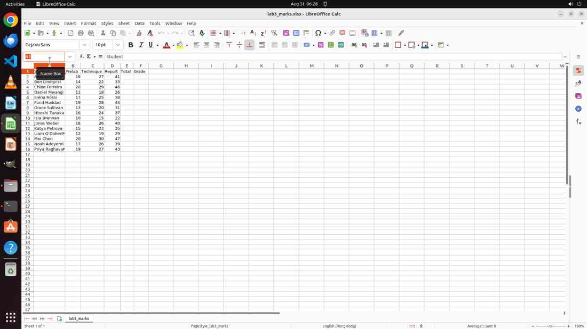
step 19 22:28:56
THINKINGThe Name Box is focused (shows A1 selected). Let me type E2 and Enter to navigate there, then type the Total formulas for E2:E16, each followed by Enter.
I'll type into the Name box: E2, then Enter. Then type the 15 formulas.
Let me batch: type "E2", Enter, then the formulas.
ACTIONNow I'll navigate to E2 and enter the Total formulas for all 15 students.
EXECUTED (pyautogui in VM)pyautogui.typewrite("E2")
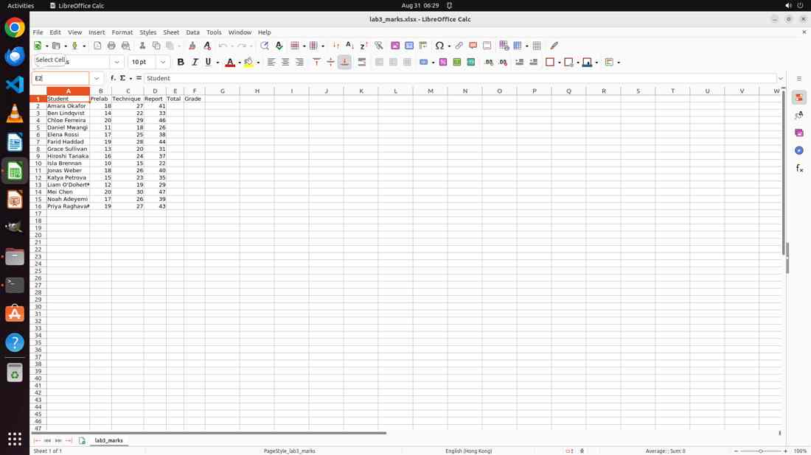
step 20 22:29:29
THINKINGHmm, the Name Box shows "E2" but the formula bar still shows "Student" and A1 is still the selected cell (highlighted in row 1, column A). It seems the Enter didn't navigate; the name box still shows "E2" as text being typed and the "Select Cell" tooltip is showing. Actually the name box shows "E2" — but the cell reference A1 is still highlighted. It appears the navigation may not have completed. The label shows "Select Cell" which is the tooltip. Let me press Enter again to confirm navigation. Actually, looking closely, the Name Box contains "E2" and there's a cursor. The grid still highlights A1. Let me press Return to confirm.
ACTIONThe Name Box shows "E2" but navigation may not have completed. Let me press Enter to confirm the navigation.
EXECUTED (pyautogui in VM)pyautogui.press("return")
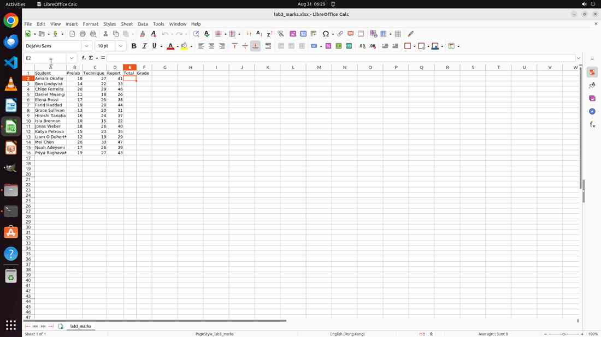
step 21 22:30:26
THINKINGNow E2 is selected (Name Box shows E2, and column E row 2 is highlighted). Now I'll type the Total formulas for E2:E16, each followed by Enter. I'll type all 15 in one batch.
ACTIONE2 is now selected. I'll type all 15 Total formulas in sequence (each Enter moves down one row).
EXECUTED (pyautogui in VM)pyautogui.typewrite("=B2+C2+D2\n=B3+C3+D3\n=B4+C4+D4\n=B5+C5+D5\n=B6+C6+D6\n=B7+C7+D7\n=B8+C8+D8\n=B9+C9+D9\n=B10+C10+D10\n=B11+C11+D11\n=B12+C12+D12\n=B13+C13+D13\n=B14+C14+D14\n=B15+C15+D15\n=B16+C16+D16")
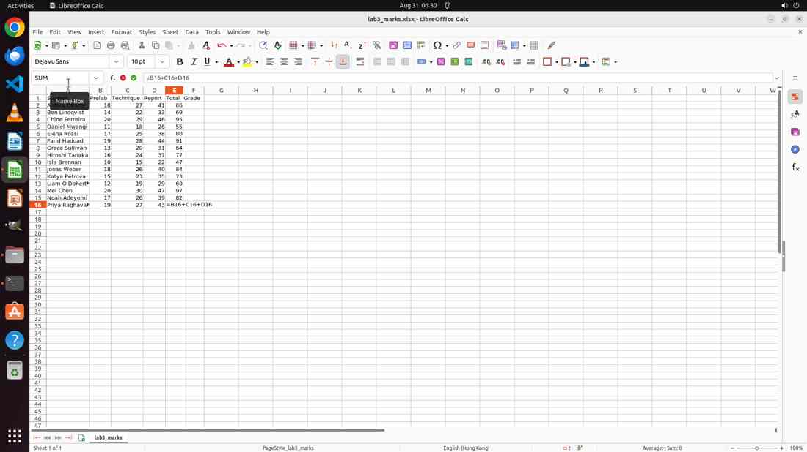
step 22 22:31:03
THINKINGThe Total column E2:E16 now shows values: 86, 69, 95, 55, 80, 91, 64, 77, 47, 84, 73, 60, 97, 82, and row 16 still shows the formula "=B16+C16+D16" being entered (the last one hasn't been committed because I see E16 showing "=B16+C16+D16" in edit mode with the formula bar showing it). Wait, actually looking: rows 2-15 show computed values (86,69,95,55,80,91,64,77,47,84,73,60,97,82) and row 16 shows "=B16+C16+D16" still in edit. The trailing newline after the last formula should have committed it. But the screenshot shows E16 still in edit mode. My typing had a trailing newline so it should have committed and moved to E17. But it appears E16 is still being edited.
Actually, the screenshot was captured during/after the type. The last Enter may still be processing. The values 2-15 match my calculations: 86,69,95,55,80,91,64,77,47,84,73,60,97,82 — yes those are E2 through E15. E16 shows the formula text. Let me press Enter/Return to commit E16.
Wait, that means my values: E2=86 ✓, E3=69 ✓, E4=95 ✓, E5=55 ✓, E6=80 ✓, E7=91 ✓, E8=64 ✓, E9=77 ✓, E10=47 ✓, E11=84 ✓, E12=73 ✓, E13=60 ✓, E14=97 ✓, E15=82 ✓. All match my hand calc. Good. E16 should be 89.
Let me press Return to commit the E16 formula.
ACTIONThe Total values are populating correctly (86, 69, 95, 55, 80, 91, 64, 77, 47, 84, 73, 60, 97, 82). E16 still shows its formula in edit mode; let me commit it with Enter.
EXECUTED (pyautogui in VM)pyautogui.press("return")
step 23 22:31:50
THINKINGNow E16 shows 89, and cursor moved to E17. All Total values are complete: 86,69,95,55,80,91,64,77,47,84,73,60,97,82,89.
Now the Grade column F2:F16. Let me navigate to F2 via Name Box and enter the grade formulas. Formula:
=IF(E2>=90,"A",IF(E2>=80,"B",IF(E2>=70,"C",IF(E2>=60,"D","F"))))
I'll click the Name Box, type F2, Enter, then type all 15 formulas.
ACTIONTotal column complete (E16 = 89). Now I'll fill the **Grade** column. Let me navigate to F2 via the Name Box.
EXECUTED (pyautogui in VM)pyautogui.typewrite("F2")
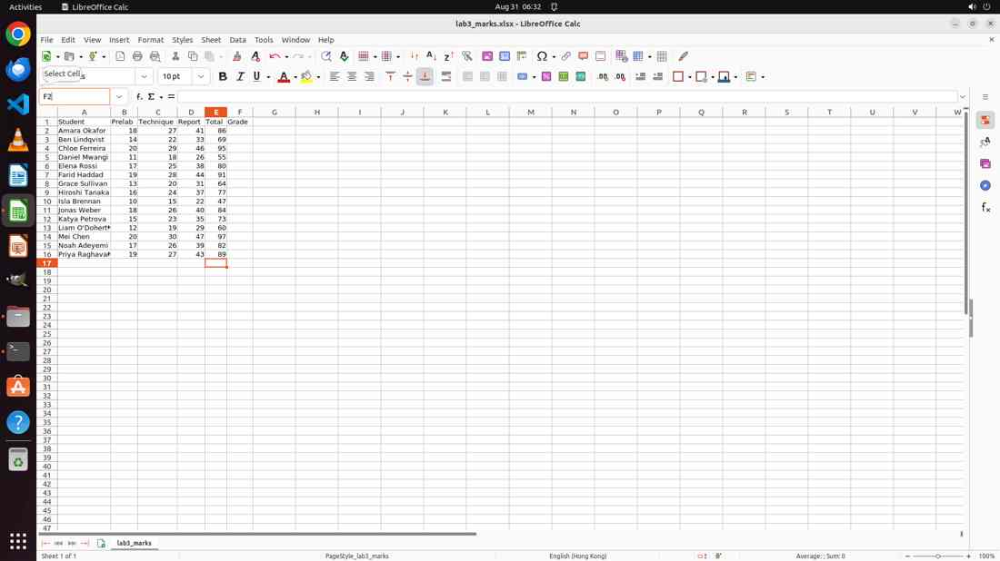
step 25 22:33:13
THINKINGThe Name Box shows "F2" but the grid still highlights E17 (the selection hasn't moved). Same behavior as before — the Enter in the name box needs to be confirmed. The tooltip "Select Cell" is showing. Let me press Return to confirm navigation to F2.
ACTIONLet me press Enter to confirm navigation to F2.
EXECUTED (pyautogui in VM)pyautogui.press("return")
step 26 22:34:10
THINKINGNow F2 is selected (Name Box shows F2, column F row 2 highlighted). Now I'll type the grade formulas for F2:F16. Each formula references its row's Total in column E.
ACTIONF2 is selected. Now I'll enter the Grade formulas for all 15 students.
EXECUTED (pyautogui in VM)pyautogui.typewrite("=IF(E2>=90,\"A\",IF(E2>=80,\"B\",IF(E2>=70,\"C\",IF(E2>=60,\"D\",\"F\"))))\n=IF(E3>=90,\"A\",IF(E3>=80,\"B\",IF(E3>=70,\"C\",IF(E3>=60,\"D\",\"F\"))))\n=IF(E4>=90,\"A\",IF(E4>=80,\"B\",IF(E4>=70,\"C\",IF(E4>=60,\"D\",\"F\"))))\n=IF(E5>=90,\"A\",IF(E5>=80,\"B\",IF(E5>=70,\"C\",IF(E5>=60,\"D\",\"F\"))))\n=IF(E6>=90,\"A\",IF(E6>=80,\"B\",IF(E6>=70,\"C\",IF(E6>=60,\"D\",\"F\"))))\n=IF(E7>=90,\"A\",IF(E7>=80,\"B\",IF(E7>=70,\"C\",IF(E7>=60,\"D\",\"F\"))))\n=IF(E8>=90,\"A\",IF(E8>=80,\"B\",IF(E8>=70,\"C\",IF(E8>=60,\"D\",\"F\"))))\n=IF(E9>=90,\"A\",IF(E9>=80,\"B\",IF(E9>=70,\"C\",IF(E9>=60,\"D\",\"F\"))))\n=IF(E10>=90,\"A\",IF(E10>=80,\"B\",IF(E10>=70,\"C\",IF(E10>=60,\"D\",\"F\"))))\n=IF(E11>=90,\"A\",IF(E11>=80,\"B\",IF(E11>=70,\"C\",IF(E11>=60,\"D\",\"F\"))))\n=IF(E12>=90,\"A\",IF(E12>=80,\"B\",IF(E12>=70,\"C\",IF(E12>=60,\"D\",\"F\"))))\n=IF(E13>=90,\"A\",IF(E13>=80,\"B\",IF(E13>=70,\"C\",IF(E13>=60,\"D\",\"F\"))))\n=IF(E14>=90,\"A\",IF(E14>=80,\"B\",IF(E14>=70,\"C\",IF(E14>=60,\"D\",\"F\"))))\n=IF(E15>=90,\"A\",IF(E15>=80,\"B\",IF(E15>=70,\"C\",IF(E15>=60,\"D\",\"F\"))))\n=IF(E16>=90,\"A\",IF(E16>=80,\"B\",IF(E16>=70,\"C\",IF(E16>=60,\"D\",\"F\"))))")
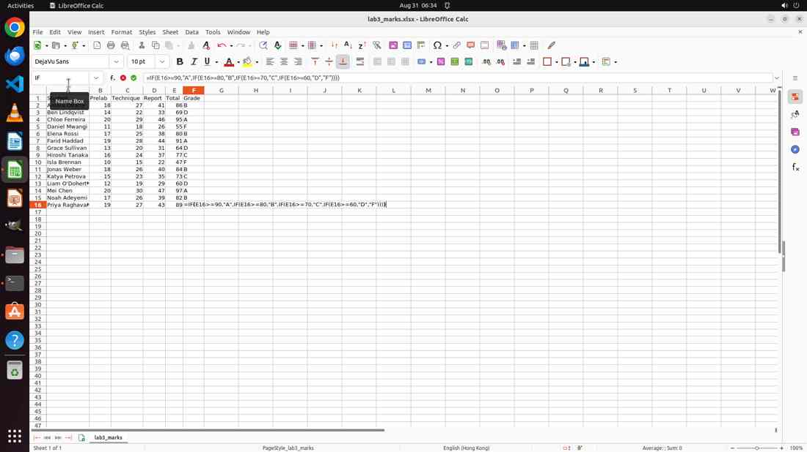
step 27 22:35:03
THINKINGGrades are populating: F2=B, F3=D, F4=A, F5=F, F6=B, F7=A, F8=D, F9=C, F10=F, F11=B, F12=C, F13=D, F14=A, F15=B, and F16 is still in edit showing the formula. These match my expected grades (B,D,A,F,B,A,D,C,F,B,C,D,A,B, and F16 should be B). Let me commit F16 with Return.
ACTIONGrades are filling in correctly (B, D, A, F, B, A, D, C, F, B, C, D, A, B). F16 is still in edit mode; let me commit it.
EXECUTED (pyautogui in VM)pyautogui.press("return")
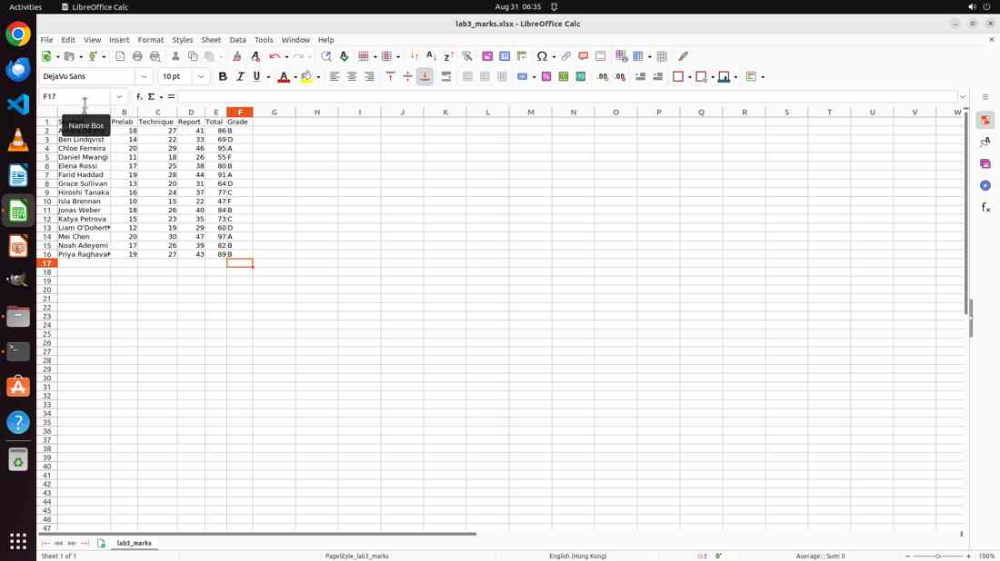
step 28 22:36:00
THINKINGNow F16 = B, cursor is at F17. All grades complete:
F2=B, F3=D, F4=A, F5=F, F6=B, F7=A, F8=D, F9=C, F10=F, F11=B, F12=C, F13=D, F14=A, F15=B, F16=B. All correct.
Now step 3: Add "Class average" row under last student (row 17). Label in A17 = "Class average", and the average of the Total column (E2:E16) rounded to one decimal place in E17.
The cursor is at F17. Let me navigate to A17. I'll click Name Box, type A17, Enter (twice confirm), then type "Class average", then Tab won't go to E. Let me do: A17 "Class average" Enter. Then navigate to E17 and type the formula.
Actually, I can type in A17, then click E17 directly. Let me first navigate to A17.
Let me click the name box.
ACTIONAll grades complete (F16 = B). Now for step 3, I'll add the "Class average" row in row 17. Let me navigate to A17.
EXECUTED (pyautogui in VM)pyautogui.typewrite("A17")
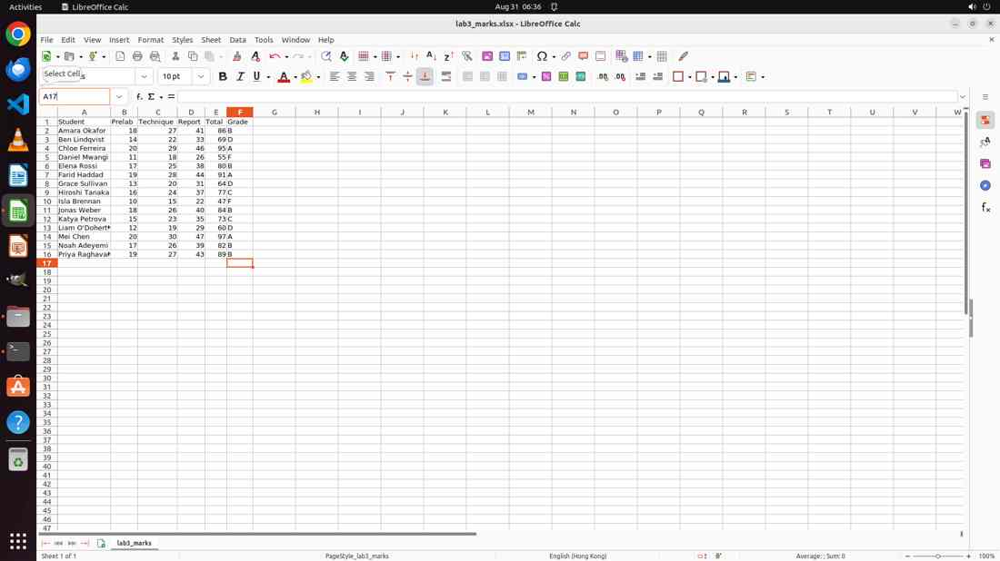
step 30 22:37:22
THINKINGThe name box shows "A17" but the grid still highlights F17 (the "Select Cell" tooltip is showing, meaning it hasn't confirmed navigation). Let me press Return to confirm.
EXECUTED (pyautogui in VM)pyautogui.press("return")
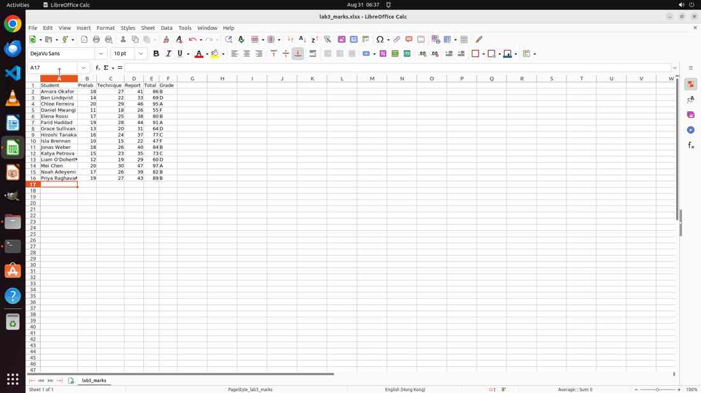
step 31 22:38:23
THINKINGA17 is now selected (Name Box A17, row 17 col A highlighted). Now I'll type "Class average" and Enter to commit it to A17. Then I need to go to E17 for the average formula. After Enter, cursor goes to A18. I'll then navigate to E17 via name box.
Alternatively, I can type "Class average" in A17, press Tab four times to reach E17 (A→B→C→D→E), then type the formula. But Tab would leave B17, C17, D17 empty which is fine. Let me do: type "Class average", Tab, Tab, Tab, Tab (now at E17), type the average formula, Enter.
Actually, careful: pressing Tab after entering text in A17 commits and moves to B17. Four Tabs: B17, C17, D17, E17. So 4 tabs gets to E17. Then type formula. That's clean and predictable.
The average formula: =ROUND(AVERAGE(E2:E16),1)
ACTIONA17 is selected. I'll type the "Class average" label, tab across to E17, and enter the rounded average formula.
TOOL CALL<tool_call>
<function=computer_use>
<parameter=action>
type
</parameter>
<parameter=text>
Class average
</parameter>
</function>
</tool_call>
EXECUTED (pyautogui in VM)pyautogui.typewrite("Class average")
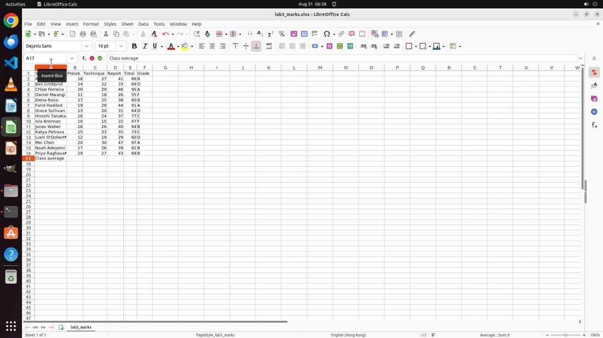
step 32 22:39:45
THINKINGA17 shows "Class average" and the cell is still in edit mode (formula bar shows "Class average" with the green check / red X edit icons visible). The Tab keys I typed as part of the string... wait, I typed "Class average" followed by several Tab characters in one type action. But it seems the cell is still in edit mode showing "Class average" — the tabs may not have been processed as Tab key presses; they might have been included literally or ignored. Actually the cell A17 displays "Class average" and the edit indicator (check/x) is showing, meaning it's still in edit. The formula bar shows "Class average". So the tabs didn't commit/navigate.
This is because within a single "type" action, the tab characters may be sent as literal tabs into the cell edit rather than committing. Actually, it's still editing. Let me just commit with Enter now, then navigate to E17 separately via the Name Box to be safe.
Let me press Enter to commit A17.
ACTIONThe label is entered in A17 but still in edit mode (the tabs didn't advance). Let me commit it with Enter, then navigate to E17 separately.
EXECUTED (pyautogui in VM)pyautogui.press("return")
step 33 22:40:46
THINKING"Class average" is committed in A17, cursor now at A18. Now navigate to E17 and enter the average formula. Let me click the Name Box, type E17, Enter (confirm), then type the formula.
ACTION"Class average" is committed in A17. Now let me navigate to E17 to enter the rounded average of the Total column.
EXECUTED (pyautogui in VM)pyautogui.typewrite("=ROUND(AVERAGE(E2:E16),1)")
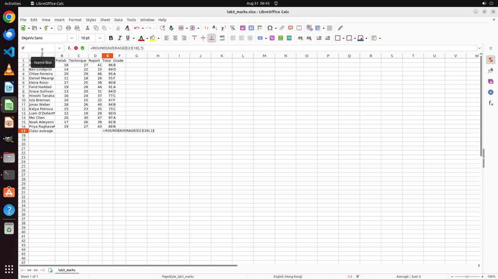
step 37 22:44:28
THINKINGThe formula is still in edit mode (E17 shows the formula text, and the formula bar shows =ROUND(AVERAGE(E2:E16),1) with edit indicators). The Name Box shows "IF" which is odd — that seems to be a tooltip artifact. The cell is still in edit mode; the trailing newline may not have committed. Let me press Return to commit.
ACTIONThe formula is entered but still in edit mode. Let me commit it with Enter.
EXECUTED (pyautogui in VM)pyautogui.press("return")
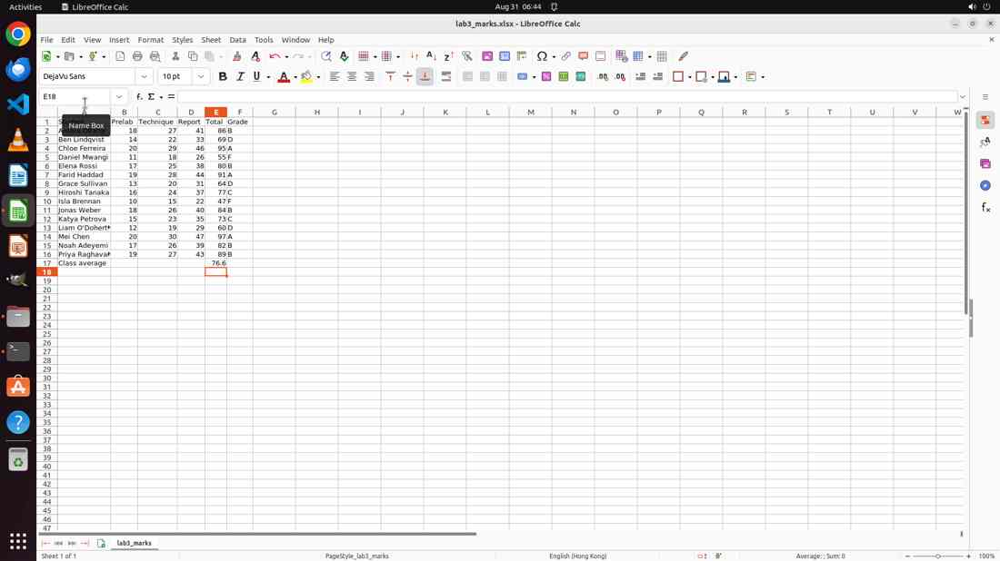
step 38 22:45:21
THINKINGE17 now shows 76.6, matching my calculation (1149/15 = 76.6).
Now step 4: Make the header row bold. The header is row 1 (A1:F1). I'll select row 1 by clicking the row header "1", then apply bold (Ctrl+B). Let me click on row header 1 (the "1" at the left, coordinate ~60,157).
ACTIONThe class average shows 76.6, matching the expected value. Now step 4: make the header row (row 1) bold. I'll select the entire row 1 by clicking its row header, then apply bold.
EXECUTED (pyautogui in VM)pyautogui.hotkey("ctrl", "b")
step 40 22:47:14
THINKINGThe header row 1 is now bold (Student, PreLab, Technique, Report, Total, Grade appear bold, and the Bold button is highlighted).
All 5 checklist steps are done:
1. Total column ✓
2. Grade column ✓
3. Class average row = 76.6 ✓
4. Header bold ✓
5. Save in xlsx format — now.
Let me save with Ctrl+S. Since it's xlsx, a dialog will ask to keep format; I'll click "Use Excel 2007-365!" / "Keep Current Format".
ACTIONThe header row is now bold. All five checklist steps are complete. Now step 5: save in place keeping the xlsx format. I'll press Ctrl+S.
EXECUTED (pyautogui in VM)pyautogui.hotkey("ctrl", "s")
step 41 22:48:13
THINKINGThe save dialog for "Keep format" didn't appear in this screenshot yet — it may be about to appear, or it may have been quick. Usually a "Keep Current Format?" dialog appears. Let me wait a moment and screenshot to check for the dialog.
ACTIONA format confirmation dialog may appear. Let me check.
THINKINGNo dialog appeared. It's possible the "keep format" dialog was dismissed automatically, or the save completed without prompting (some configs skip it), or the dialog appeared and closed very fast. The title bar still shows "lab3_marks.xlsx" without a modified indicator. To be certain the file was actually saved in xlsx, let me verify by checking the file's modification time via the terminal. If it wasn't saved (dialog pending elsewhere), the mod time would be old.
Actually, it's safer to verify. Let me switch to the terminal and check the file mtime. But the terminal window may be behind. Let me instead just re-save to be safe, and this time watch for the dialog. Actually, let me verify via terminal to confirm the save happened with correct content. I'll use python or just check mtime.
Let me open the terminal from the dock (it's at position 22,451).
ACTIONNo format dialog is visible — the save may have completed silently. Let me verify the file was actually written by checking its modification time in the terminal.
EXECUTED (pyautogui in VM)pyautogui.click(32, 674)
step 43 22:50:09
THINKINGNow I can also see the checklist text clearly confirmed:
1. Fill the Total column for every student: PreLab + Technique + Report.
2. Fill the Grade column from the Total using these bands: 90 and above = A, 80-89 = B, 70-79 = C, 60-69 = D, below 60 = F
3. Add a row labelled "Class average" directly under the last student, holding the average of the Total column rounded to one decimal place.
4. Make the header row bold.
5. Save the workbook, keeping the xlsx format.
All matches what I did. Now let me verify the file was saved by checking mtime and reading the cell values. Let me run a command to check mtime and dump values using python (openpyxl may not be installed; let me just check mtime first and use a quick unzip to inspect, or try python3 with openpyxl). Simplest: check mtime to confirm save. Let me type the command.
ACTIONThe checklist is fully confirmed. Let me verify the workbook was saved by checking its modification time.
TOOL CALL<tool_call>
<function=computer_use>
<parameter=action>
type
</parameter>
<parameter=text>
date; ls -l --time-style=+%H:%M:%S ~/marking/lab3_marks.xlsx
</parameter>
</function>
</tool_call>
EXECUTED (pyautogui in VM)pyautogui.typewrite("date; ls -l --time-style=+%H:%M:%S ~/marking/lab3_marks.xlsx")
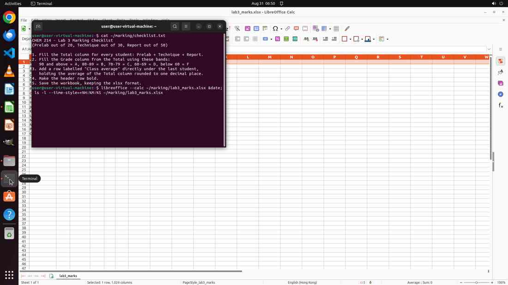
step 44 22:50:58
THINKINGThe command got concatenated with the previous background command line. It seems the "&" from the earlier `libreoffice ... &` line was still on the prompt, and my new text appended. The line now reads:
`libreoffice --calc ~/marking/lab3_marks.xlsx &date; ls -l --time-style=+%H:%M:%S ~/marking/lab3_marks.xlsx`
Wait, that's messy. Actually the earlier `libreoffice --calc ... &` was typed and I pressed Enter, launching it in background. But it seems the prompt still shows it. This got jumbled. Rather than risk a broken command, let me just press Enter and see the output, then re-run a clean command if needed.
Actually looking carefully: the previous command `libreoffice --calc ~/marking/lab3_marks.xlsx &` — the "&" means background. Then I pressed Enter which ran it. But the terminal display shows the prompt still has that text plus my new text concatenated. This is confusing. Let me just clear the line and type a fresh command. Let me press Ctrl+C to abort current line, then type a clean command.
ACTIONThe command line got jumbled with the earlier background command. Let me clear it and run a clean command.
EXECUTED (pyautogui in VM)pyautogui.hotkey("ctrl", "c")
step 45 22:51:33
THINKINGNow there's a clean prompt. Let me run a verification command that reads the actual xlsx cell values and header bold. I'll use python3 with openpyxl if available. Let me try a python one-liner. If openpyxl isn't installed, I'll fall back to checking mtime and unzipping the sheet XML.
Let me first just check mtime to confirm the save occurred.
ACTIONNow let me verify the file was saved with the correct content. I'll inspect the actual cell values using Python.
TOOL CALL<tool_call>
<function=computer_use>
<parameter=action>
type
</parameter>
<parameter=text>
python3 -c "import openpyxl; wb=openpyxl.load_workbook('/home/user/marking/lab3_marks.xlsx'); ws=wb.active; [print(r, [c.value for c in ws[r]], 'bold=', ws.cell(r,1).font.bold) for r in range(1,18)]"
</parameter>
</function>
</tool_call>
EXECUTED (pyautogui in VM)pyautogui.typewrite("python3 -c \"import openpyxl; wb=openpyxl.load_workbook('/home/user/marking/lab3_marks.xlsx'); ws=wb.active; [print(r, [c.value for c in ws[r]], 'bold=', ws.cell(r,1).font.bold) for r in range(1,18)]\"")
step 46 22:51:51
THINKINGThe command is typed but I need to press Enter to execute it. The command text is fully entered (ending with the closing quote and ]). Let me press Enter.
EXECUTED (pyautogui in VM)pyautogui.press("return")
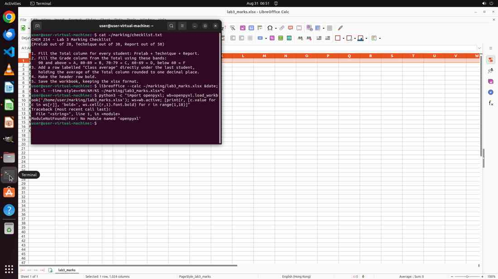
step 47 22:52:36
THINKINGopenpyxl isn't installed. Let me verify by unzipping the xlsx and inspecting the sheet XML directly. I'll extract shared strings and sheet1, and check the mtime. A simpler approach: unzip the workbook's sheet1.xml and grep for values, and check mtime. Let me first check the mtime to confirm the save happened (this is the key verification that the save persisted in xlsx).
ACTIONopenpyxl isn't installed. Let me verify the save another way — checking the file's modification time and inspecting the sheet XML directly.
TOOL CALL<tool_call>
<function=computer_use>
<parameter=action>
type
</parameter>
<parameter=text>
date +%H:%M:%S; ls -l --time-style=+%H:%M:%S ~/marking/lab3_marks.xlsx; mkdir -p /tmp/x && cd /tmp/x && rm -rf * && unzip -o ~/marking/lab3_marks.xlsx >/dev/null && echo "--- sheet rows ---" && grep -o '<row[^>]*r="[0-9]*"[^>]*>.*</row>' xl/worksheets/sheet1.xml | head -20
</parameter>
</function>
</tool_call>
EXECUTED (pyautogui in VM)pyautogui.typewrite("date +%H:%M:%S; ls -l --time-style=+%H:%M:%S ~/marking/lab3_marks.xlsx; mkdir -p /tmp/x && cd /tmp/x && rm -rf * && unzip -o ~/marking/lab3_marks.xlsx >/dev/null && echo \"--- sheet rows ---\" && grep -o '<row[^>]*r=\"[0-9]*\"[^>]*>.*</row>' xl/worksheets/sheet1.xml | head -20")
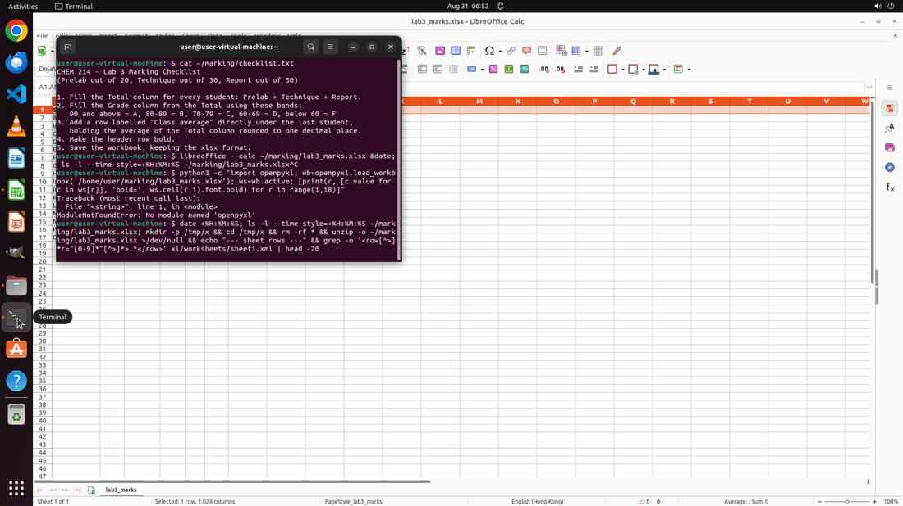
step 48 22:53:35
THINKINGThe command is typed. Let me press Enter to run it.
EXECUTED (pyautogui in VM)pyautogui.press("return")
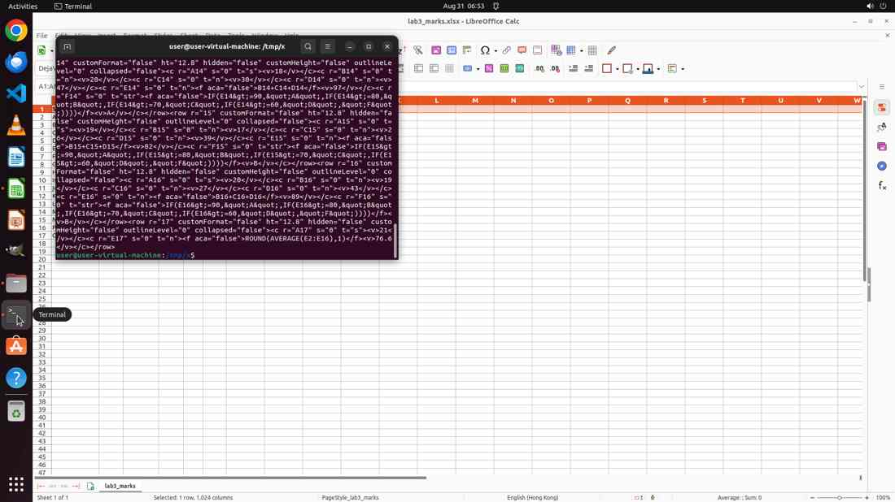
step 49.1 22:54:03
THINKINGThe XML confirms everything was saved:
- E17: `=ROUND(AVERAGE(E2:E16),1)` with cached value `<v>76.6</v>` ✓
- The Grade formulas are present (IF(E16>=90,"A"... etc.) with cached values like `<v>B</v>` ✓
- Row 17 present with A17 as a string (Class average) and E17 the formula ✓
I need to scroll up in the terminal to see the mtime and the header bold confirmation. The output scrolled past the date/mtime and the first rows (row 1 header with bold style). Let me scroll up to check:
1. The date/mtime line — confirms the file was just saved (should be ~06:53).
2. Row 1 header cells and whether they have a bold style applied.
The header bold: In xlsx, bold is a style. The header cells would reference a style index (s="N") whose font has <b/>. I saw "s="0"" on many cells. I need to check the header row's style. Let me scroll up to see rows 1-3 and the date. Let me scroll up in the terminal.
Actually, the key verifications:
- Save happened: mtime should be current (~06:53). The unzip succeeded which means file exists and is a valid xlsx. But I want to confirm it was modified recently (the save persisted).
- Header bold: I applied Ctrl+B to row 1 in the GUI, and the header displayed bold. The xlsx should contain a bold font for row 1 cells. Let me verify by checking the row 1 style and the styles.xml.
Let me scroll up to see the top of the output first.
ACTIONThe sheet XML confirms the save succeeded: E17 holds `=ROUND(AVERAGE(E2:E16),1)` with cached value `76.6`, and the Grade cells contain the IF formulas with cached letter values (e.g., `B`). Let me scroll up to confirm the save timestamp and verify the header row's bold styling.